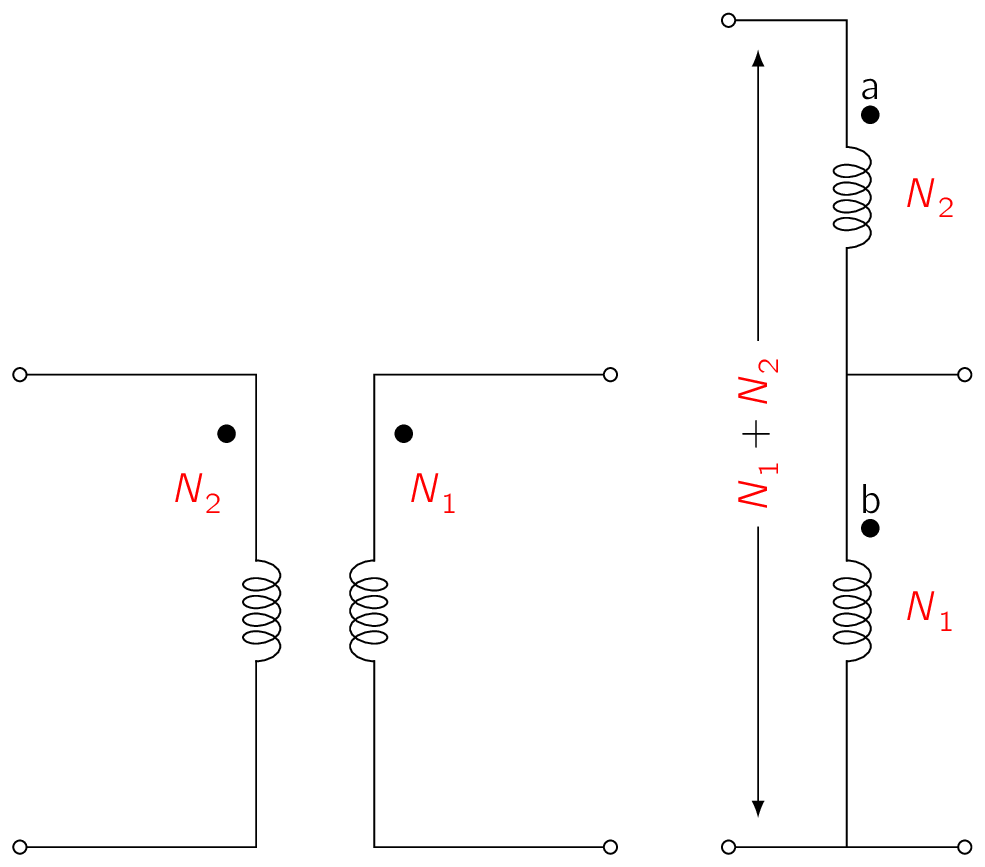
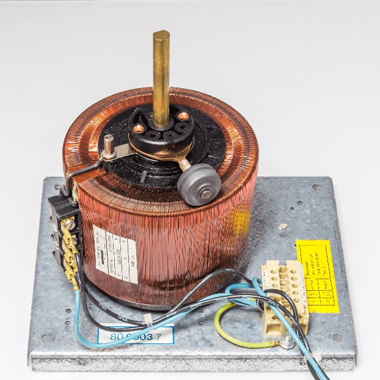
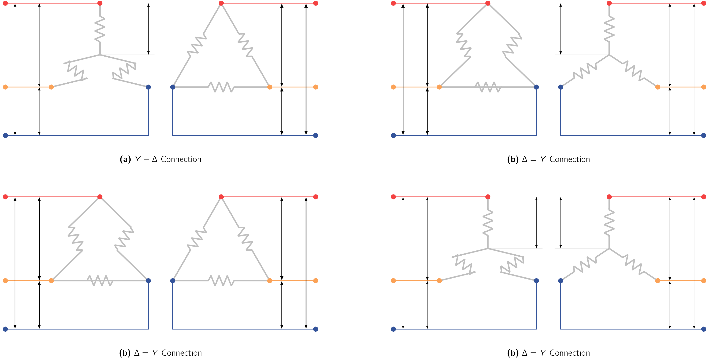
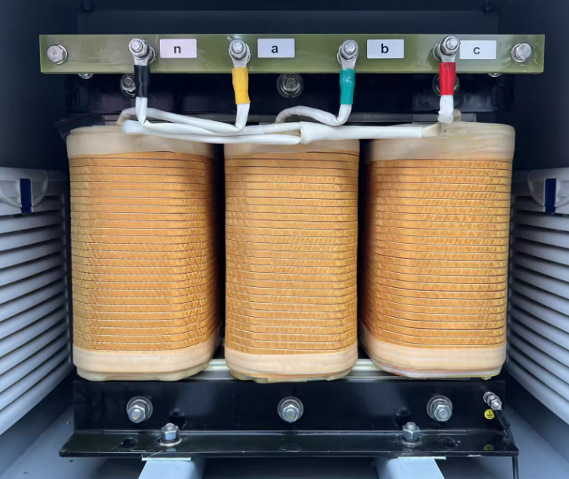
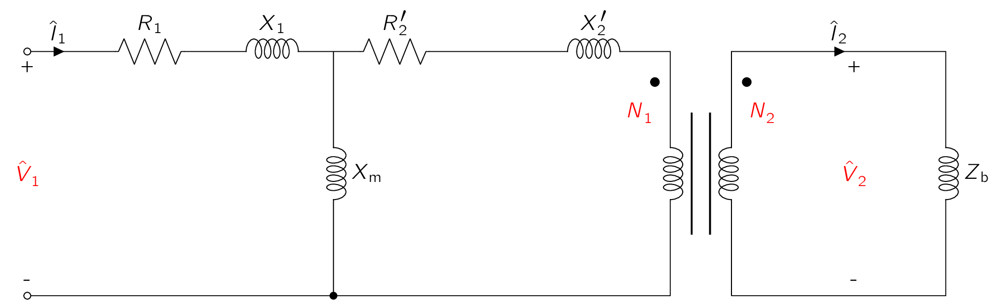
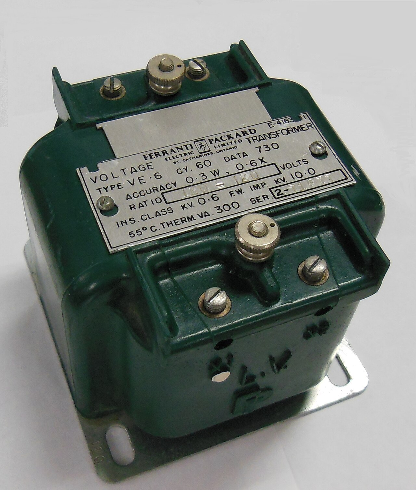

We’ve now developed the necessary mathematical and conceptual understanding required to appreciate the utility of transformers and as we can imagine, there are a wide variety of transformer types available which are designed for specific purposes which this section aims to cover.
The core concept we have developed up to now were for two-winding transformers only. However, these can also be applied to transformers with other winding configurations such as auto-transformers and multi-winding transformers which will be the focus here.
AutoTransformers


In Fig. 2.10a, a two-winding transformer is shown with and turns on the primary and secondary windings respectively. The same transformation effect on voltages, currents, and impedances can also be obtained when these windings are connected as shown in Fig. 2.10b.
In Fig. 2.10b, winding bc is common to both the primary and secondary circuits.
This type of transformer is called an autotransformer. From construction point of view, it is little more than a normal transformer connected in a special way.
However, an important difference is the windings of the two-winding transformer are electrically isolated whereas those of the autotransformer are connected directly together. In addition, in the autotransformer connection, winding ab must be provided with extra insulation as it must be insulated against the full maximum voltage of the autotransformer.
They have lower leakage reactances, lower losses, and smaller exciting current and cost less than two-winding transformers when the voltage ratio does not differ too greatly from .
The following example illustrates the benefits of an autotransformer for those situations where electrical isolation between the primary and secondary windings is NOT an important consideration.
When a transformer is connected as an autotransformer as shown in Fig. 2.10, the rated voltages of the autotransformer can be expressed in terms of those of the two-winding transformer as:
The effective turns ratio of the autotransformer is and the power rating of the autotransformer is equal to times that of the two-winding transformer, although the actual power processed by the transformer will NOT increase over that of the standard two-winding connection.
Multiwinding Transformers
Transformers having three (3) or more windings, known as multi-winding or multi-circuit transformers, are often used to interconnect three or more circuits which may have different voltages. [49] For these applications a multiwinding transformer costs less and is more efficient than an equivalent number of two-winding transformers.
Transformers having a primary and multiple secondaries are frequently found in multiple-output DCDirect CurrentOne-directional flow of electric charge. Direct current may flow through a conductor such as a wire, but can also flow through semiconductors, insulators, or even through a vacuum as in electron or ion beams. The electric current flows in a constant direction, distinguishing it from alternating current (AC). A term formerly used for this type of current was galvanic current. power supplies for electronic applications. Distribution transformers used to supply power for domestic purposes usually have two secondaries connected in series. Circuits for lighting and low-power applications are connected across each of the windings, while electric ranges, domestic hot-water heaters, clothes-dryers, and other high-power loads are supplied with power from the series-connected secondaries.
Distribution Systems In a similar fashion, a large distribution system can be supplied through a three-phase bank of multiwinding transformers from two or more transmission systems having different voltages. In addition, the three-phase transformer banks used to interconnect two transmission systems of different voltages often have a third, or tertiary, set of windings to provide voltage for auxiliary power purposes in substations or to supply a local distribution system.
Static capacitors or synchronous condensers can be connected to the tertiary windings for power factor correction or voltage regulation. [50] Sometimes -connected tertiary windings are put on three-phase banks to provide a low-impedance path for third harmonic components of the exciting current to reduce third-harmonic components of the neutral voltage. Some of the issues arising in the use of multiwinding transformers are associated with the effects of leakage impedances on voltage regulation, short-circuit currents, and division of load among circuits. These problems can be solved by an equivalent circuit technique mentioned previously.
Unfortunately equivalent circuits of multi-winding transformers are more complicated as they must take into account the leakage impedances associated with each pair of windings. Typically, in these equivalent circuits, all quantities are referred to a common base by use of the appropriate turns ratios as referring factors.
The exciting current is generally neglected in modelling for simplicity.
One of the more practical applications of transformers are, of course in the use of the grid. Given most supplied energy across vast distances are poly-phase, [51] Disregarding specialty cases, this is mostly three. we require the use of poly-phase transformers to step-up or step-down voltages as required.

Three single-phase transformers can be connected to form a three-phase transformer bank in any of the four (4) ways shown in Fig. 2.13. In all four parts of the figure, the windings at the left are the primaries, those at the right are the secondaries, and any primary winding in one transformer corresponds to the secondary winding drawn parallel to it.
Also shown are the voltages and currents resulting from balanced impressed primary line-to-line voltages () and line currents () when the ratio of primary-to-secondary turns is and ideal transformer behaviour are assumed.
The rated voltages and currents at the primary and secondary of the three-phase transformer bank depends on the connection used but the rated kVA of the three-phase bank is three times that of the individual single-phase transformers, regardless of the connection.
Connection Types
As can be seen the ability to connect transformers as either Y or allows us to do certain combinations by changing how the primary or the secondary is connected. Let’s have a look at them and see their advantages and disadvantages.
- Star-Delta Connection
-
Commonly used in stepping down from a high voltage to a medium or low voltage. One reason is for this is the presence of a neutral provided for grounding on the high-voltage side, a procedure which can be shown to be desirable in many cases.
- Delta-Star Connection
-
Commonly used for stepping up to a high voltage.
- Delta-Delta Connection
-
It has the advantage that one transformer can be removed for repair or disconnected for maintenance while the remaining two continue to function as a three-phase bank with the rating reduced to 58 percent of that of the original bank.
WarningThis is known as the open-delta, or V, connection.
- Star-Star Connection
-
Seldom used because of difficulties with exciting-current phenomena. [52] As there is no neutral connection to carry harmonics of the exciting current, harmonic voltages are produced which significantly distort the transformer voltages.
Instead of three single-phase transformers, a three-phase bank may consist of one three-phase transformer having all six (6) windings on a common multi-legged core and contained in a single tank. Advantages of three-phase transformers over connections of three single-phase transformers are that they cost less, weigh less, require less floor space, and have somewhat higher efficiency. A photograph of the internal parts of a large three-phase transformer is shown in Fig. 2.14.

Calculations involving three-phase transformer banks under balanced conditions can be made by dealing with only one of the transformers or phases and recognizing that conditions are the same in the other two phases except for the phase displacements associated with a three-phase system.
It is usually convenient to carry out the computations on a single-phase, such as per-phase-Y, line-to-neutral basis, given transformer impedances can then be added directly in series with transmission line impedances. The impedances of transmission lines can be referred from one side of the transformer bank to the other by use of the square of the ideal line-to-line voltage ratio of the bank.
In dealing with Y- or -Y banks, all quantities can be referred to the Y-connected side. In dealing with - banks in series with transmission lines, it is convenient to replace the -connected impedances of the transformers by equivalent Y-connected impedances.
A final point to mention is that a balanced -connected circuit of is equivalent to a balanced Y-connected circuit of if
2]
Three standard transformers are reconnected - and supplied with power through a 2400-V (line-to-line) three-phase feeder whose reactance is .
At its sending end, the feeder is connected to the secondary terminals of a three-phase -connected transformer whose rating is:
The equivalent series impedance of the sending-end transformer is:
referred to the 2400-V side. The voltage applied to the primary terminals of the sending-end transformer is 24.0 kV line-to-line.
A three-phase short circuit occurs at the 240-V terminals of the receiving-end transformers.
Using this information, calculate the steady-state short-circuit current in the 2400-V feeder phase wires, in the primary and secondary windings of the receiving-end transformers, and at the 240-V terminals.
The calculations will be made on an equivalent line-to-neutral basis with all quantities referred to the 2400-V feeder. The source voltage then is:
From Eq. (2.32) , the single-phase-equivalent series impedance of the - transformer seen at its 2400-V side is
The total series impedance to the short circuit is then the sum of this impedance, that of sending-end transformer and the reactance of the feeder
which has a magnitude of
The magnitude of the phase current in the 2400-V feeder can now simply be calculated as the line-neutral voltage divided by the series impedance
and, the winding current in the 2400-V winding of the receiving-end transformer is equal to the phase current divided by or
while the current in the 240-V windings is 10 times this value
Finally, the phase current at the 240-V terminals into the short circuit is given by
Note of course that this same result could have been computed simply by recognizing that the turns ratio of the - transformer bank is equal to 10:1 and hence, under balanced-three-phase conditions, the phase current on the low voltage side will be 10 times that on the high-voltage side.
Transformers are often used in instrumentation applications to match the magnitude of a voltage or current to the range of a meter or other instrumention. As an example, most power-systems’ instrumentation is based upon voltages in the range of to RMSRoot-Mean SquareEquivalent direct current (DC) voltage of an alternating current (AC) source. and currents in the range of to RMSRoot-Mean SquareEquivalent direct current (DC) voltage of an alternating current (AC) source.. Since power system voltages range up to line-to-line and currents can be 10’s of kA, some method of supplying an accurate, low-level representation of these signals to the instrumentation is needed. A common technique is through the use of specialized transformers known as potential transformers (PT)s and current transformers (CT)s. If constructed with a turns ratio of , an ideal potential transformer would have a secondary voltage equal in magnitude to times that of the primary and identical in phase.
Similarly, an ideal current transformer would have a secondary output current equal to times the current input to the primary, again identical in phase.
Potential and current transformers [53] also referred to as instrumentation transformers. are designed to be ideal transformers as closely as possible.

The equivalent circuit of Fig. 2.15 shows a transformer loaded with an impedance at its secondary. For the sake of this discussion, the core-loss resistance has been neglected. [54] However, if there is a need, the analysis presented here can be easily expanded to include its effect. Following conventional terminology, the load on an instrumentation transformer is frequently referred to as the burden on that transformer, hence the subscript b. To simplify our discussion, we have chosen to refer all the secondary quantities to the primary side of the ideal transformer.
Voltage Transformer
Ideally it should accurately measure voltage while appearing as an open circuit to the system under measurement, meaning it should be drawing negligible current and power. Therefore, its load impedance should be large.

To start, let us assume the transformer secondary is open-circuited, i.e., . In this case:
| (2.32) |
As we see, a potential transformer with an open-circuited secondary has an inherent error, in both magnitude and phase, due to the voltage drop of the magnetizing current through the primary resistance and leakage reactance.
The difference of magnitude is high enough to make primary resistance and leakage reactance small compared to the magnetizing reactance, this inherent error can be made quite small. The situation is worsened by the presence of a finite burden. Including the effect of the burden impedance, Eq. (2.32) becomes: [55] Please observe the burden impedance has been referred to the primary.
| (2.33) |
is the burden impedance referred to the transformer primary.
From these equations, it can be seen that the characterstics of an accurate potential transformer include a large magnetizing reactance [56] more accurately, a large exciting impedance since the effects of core loss, although neglected in the analysis presented here, must also be minimised. and relatively small winding resistances and leakage reactances. Finally the burden impedance must be kept above a minimum value to avoid introducing excessive errors in the magnitude and phase angle of the measured voltage.
Current Transformer
An ideal current transformer would accurately measure voltage while appearing as a short circuit to the system under measurement. [57] i.e., developing negligible voltage drop and drawing negligible power. Therefore, its load impedance should be “small” in a sense we will now quantify.
Let’s start with the assumption that the transformer secondary is short-circuited, meaning . In this case we can write that:
| (2.34) |
In a fashion quite analogous to that of a potential transformer, Eq. (2.34) shows that a current transformer with a shorted secondary has an inherent error in both magnitude and phase, due to the fact that some of the primary current is shunted through the magnetizing reactance and does not reach the secondary.
To the extent that the magnetizing reactance can be made large in comparison to the secondary resistance and leakage reactance, this error can be made quite small.
A finite burden appears in series with the secondary impedance and increases the error. Including the effect of the burden impedance which rewrites as Eq. (2.34) :
| (2.35) |
From these equations, it can be seen that an accurate current transformer has a large magnetizing impedance and relatively small winding resistances and leakage reactances. In addition, the burden impedance on a current transformer must be kept below a maximum value to avoid introducing excessive additional magnitude and phase errors in the measured current.
-
¶
- RMSRoot-Mean Square
Equivalent direct current (DC) voltage of an alternating current (AC) source.
-
¶
- DCDirect Current
One-directional flow of electric charge. Direct current may flow through a conductor such as a wire, but can also flow through semiconductors, insulators, or even through a vacuum as in electron or ion beams. The electric current flows in a constant direction, distinguishing it from alternating current (AC). A term formerly used for this type of current was galvanic current.